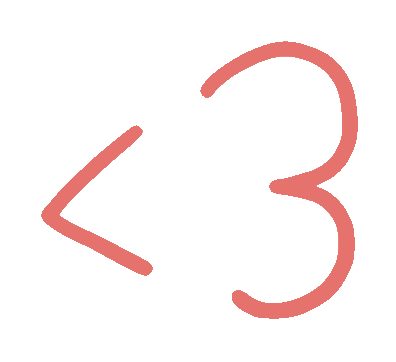
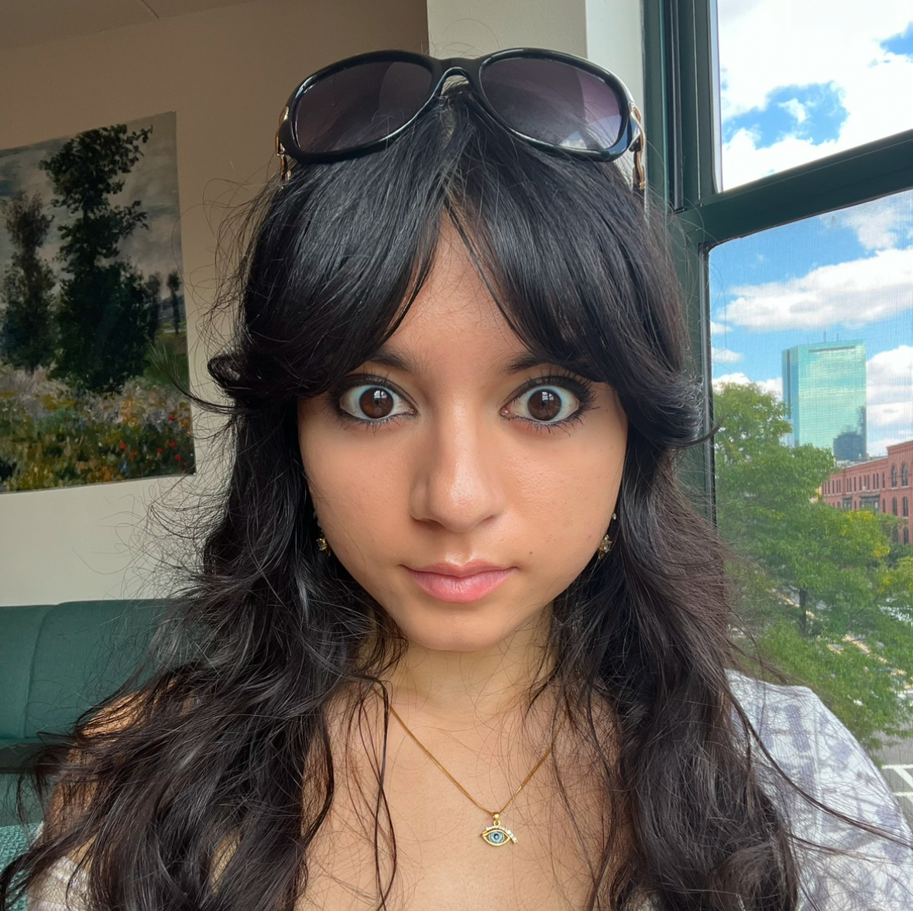
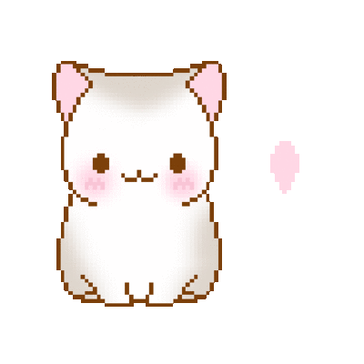

Hi! I'm Kritika, a fourth-year Honors student studying Computer Science and Design (BS) at Northeastern.
I'm a first generation Nepalese-American with a passion for exploring how technology can be a tool for social good.
I’ve worked on many personal and collaborative projects that have allowed me to strengthen my skills in programming languages such as Java, HTML/CSS, JavaScript as well as design tools such as Figma, Illustrator, Axure, and InDesign.
I'm especially drawn to human-computer interaction, a multidisciplinary field that revolves around human-centered design and computing. I love gaining new experiences that allow me to explore my passion for computer science and design through multifaceted lenses.